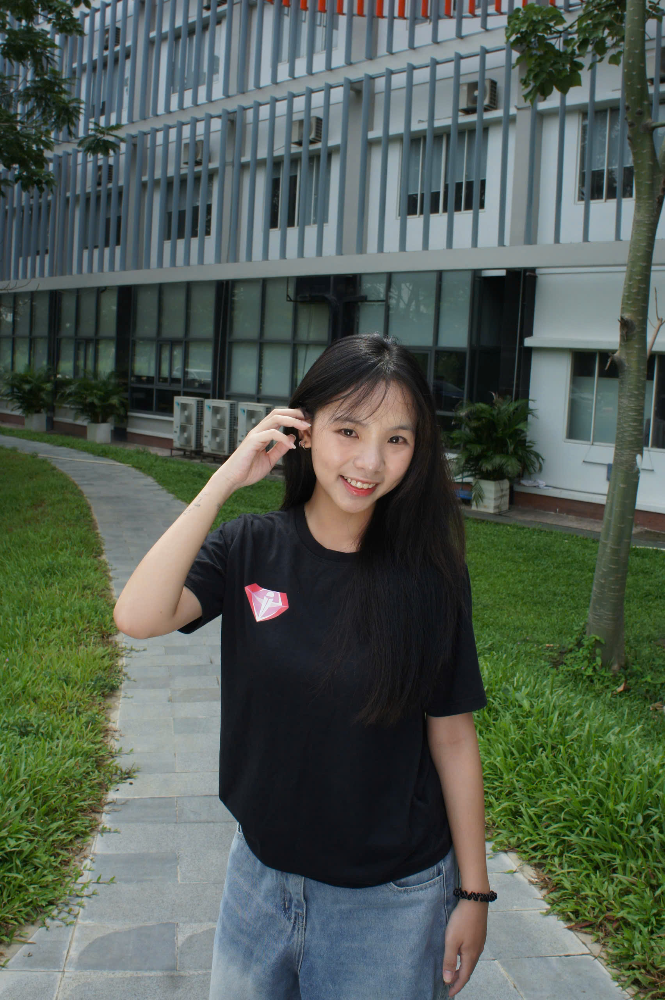

Phone: 0966515827
Email: atran9069@gmail.com
Location: Ho Chi Minh City, Vietnam
University: University of Economics and Law (UEL)
Objectives | Education | Projects | Skills | Other Infor
Third-year student majoring in Digital Business and Artificial Intelligence at the University of Economics and Law, VNU-HCM, with a strong academic record (GPA 8.18/10) and a genuine passion for turning data into meaningful business decisions. Through coursework in database management, business analysis, business intelligence, and digital marketing analytics, I have built a solid foundation in both the technical and business sides of data-driven decision making. I am actively seeking an internship opportunity in Data Analytics, Business Analysis, or AI-related fields, where I can apply my analytical thinking, database skills, and understanding of business processes to real-world problems. I am a fast learner, detail-oriented, comfortable working in team environments, and always eager to take on new challenges and expand my technical and professional skill set.
Supply Chain Management System Improvement The Coffee House (MIS Group Project, 2025): Analyzed the existing supply chain and information management processes of The Coffee House and identified key issues related to inventory accuracy, data fragmentation, and delayed information synchronization. Proposed an integrated management system connecting POS, CRM, inventory management, and a centralized data warehouse, with AI-based demand forecasting to support inventory planning and reduce stockouts and excess inventory.
Customized Drink & Ingredient Inventory Management System The Coffee House (Business Analytics Group Project, 2026):Designed a customized drink ordering concept integrated with ingredient inventory management for The Coffee House. Developed business processes and system workflows to connect customers' customized beverage selections with real-time ingredient availability, helping improve inventory visibility and reduce cases of unavailable menu items.
Badminton Court Management System (Database Group Project, 2026) : Designed and developed a database management system for badminton court operations, covering customers, members, courts, bookings, payments, promotions, and refunds. Designed relational database structures and implemented business rules to manage booking schedules, prevent booking conflicts, and support daily court management.
AI Competitor Research Agent TH true MILK(AI Solution Group Project, 2026): Designed and prototyped an AI-powered research agent to automatically collect, organize, and summarize competitor information for TH true MILK on the Shopee e-commerce platform. Analyzed business requirements and designed the agent workflow to support competitor monitoring, product comparison, pricing analysis, and promotional research for marketing and strategic decision-making.
Digital Marketing Strategy Analysis VPS & Competitors (Digital Marketing Group Project, 2025) : Conducted a comparative analysis of VPS's digital marketing strategy against two major competitors in the Vietnamese securities industry. Evaluated social media content, communication channels, engagement performance, and campaign approaches to identify strengths, weaknesses, and opportunities. Based on the analysis, proposed recommendations to improve content strategy, customer engagement, and digital communication effectiveness.